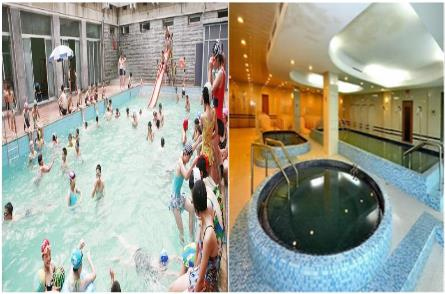
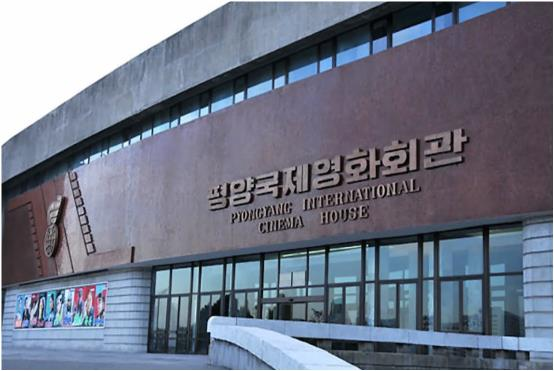
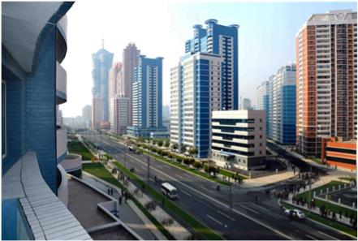
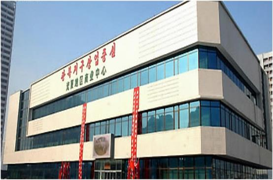

당신은 핫한 것에 끌리는 활동적인 문화인!
당신에게 추천하는 여행지
창광원/류경원
서평양과 동평양에 자리하고 있는 대중목욕탕이다. 이 곳은 목욕탕 뿐만 아니라 다른 문화시설도 즐길 수 있어 주민들에게 인기 많은 최고의 시설이다. 창광원은 한반도 최초의 대중목욕탕으로 목욕탕 외에도 수영장, 이발소, 미용실 등의 시설을 갖추고 있는 종합편의시설이다. 또한 안마실에서는 물리치료도 받을 수 있다. 류경원도 창광원과 같이 여러 편의시설을 갖춘 대중목욕탕으로 창광원과 달리 특색 있는 사우나방들이 있다.
평양국제영화회관
연중 고정적으로 외국영화를 상영하는 유일한 영화관으로 이 곳 말고도 대동문영화관, 개선영화관, 락원영화관 등이 있다. 5개의 관람실과 가족 단위 또는 개인이 여러 영화와 비디오를 관람할 수 있는 녹화시청실을 갖추고 있다. 외관은 17개의 바람개비가 돌아가는 듯한 형상을 이루고 있다. 매년 9월마다 국제영화제인 평양국제영화축전의 개막식이 이 곳에서 열린다. 현재까지 16차가 열렸다.
미래과학자거리/여명거리
평양 시내 주요 대학 인근 과학자, 교육자들을 위한 주거복합단지 거리이다. 주민들 사이에선 1년에 거리 하나씩이 생겨난다는 말이 나올정도로 많은 변화를 겪고 있다. 여명거리는 ‘평양의 맨해튼’이란 별명을 가지고 있다. 21세기 에너지절약거리, 녹색거리를 표방한 곳으로 빗물회수이용기술, 수경재배기술 등 에너지절약기술이 도입되어 있다. 미래과학자거리는 ‘북한판 판교’란 별명을 가지고 있다. 북한의 과학자 중시 정책의 상징으로 고급주택단지는 물론 4D영화관, 상업편의시설들이 들어서 있다.
광복백화점
북한 최대 백화점 중 한 곳으로 광복거리에 있다. 기본건물(4층)과 부속건물(8층)로 이뤄져있다. 이 곳을 다녀온 사람에 의하면 남한의 이마트와 비슷하게 생겼다고한다. 규모도 크고 깨끗하게 유지가 잘 되고 있다. 북한단체관광을 하러 올 때 주로 이 곳에서 쇼핑을 한다.